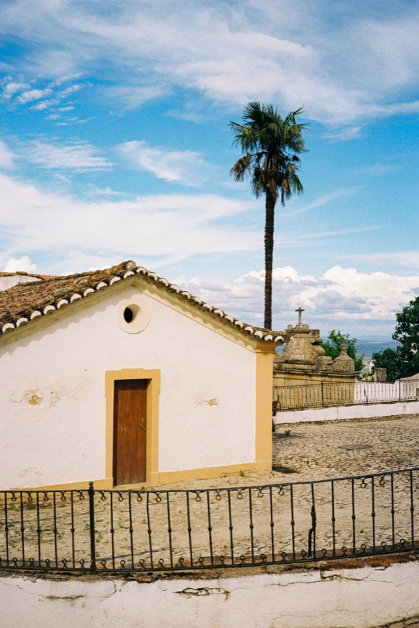
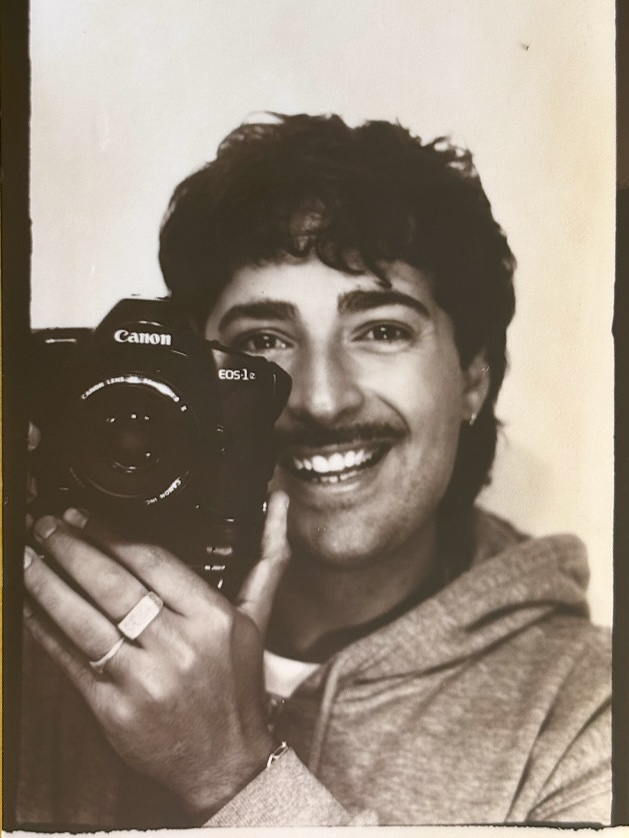

Hi, we’re Deséjo.
Campaigns on film, made slowly and on purpose.
Deséjo is an independent production studio in Melbourne, founded by photographer Emilio Dümar after years of shooting for fashion labels and magazines.
Together with a growing circle of producers, stylists and trusted creatives, we work across 35mm film, iPhone content and full campaign production. From a single shoot to a fully produced campaign, we’re with you from the first idea to final delivery.
Why film? Because it looks the way memories feel. Warm, soft, a little grainy and never quite perfect. In a feed full of clean, clinical pictures, that’s what makes people stop scrolling.
35mm and iPhone, every shoot. A roll has 36 frames, so every frame on film is chosen: that’s your brand world. Right alongside it, the iPhone catches the raw, in-between moments your feed and ads run on. Super 8, camcorder or 4K video can come along whenever you need them.
Based in Melbourne, working worldwide.
35mm stills · iPhone content for social and ads · Super 8, camcorder & 4K video · Concept, location & casting · Travel, the day itself & post
One production covers the whole thing, so you leave with everything a campaign needs.
Got something in mind?
Tell us a little about your brand, where you’d love to shoot and roughly when. We read every note ourselves, and we’ll come back with ideas, not just a quote.
x Deséjo